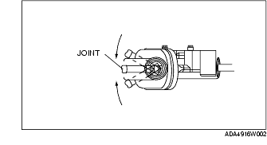

Clutch master cylinder removal/installation
- • Be careful not to spill clutch fluid on a painted surface. If this should happen, wash it off immediately.
1. Remove in the order indicated in the table.
2. Install in the reverse order of removal.
3. Bleed the air. (See CLUTCH FLUID REPLACEMENT.)
4. Inspect the clutch pedal. (See CLUTCH PEDAL INSPECTION.)

Clutch Return Spring, E-Clip Removal Note
1. Loosen the clutch master cylinder and bracket installation bolt.
Clutch Master Cylinder Installation Note
1. Hold the joint as shown.

Clutch Return Spring, E-Clip Installation Note
1. Lightly tighten the clutch master cylinder and bracket installation bolt.